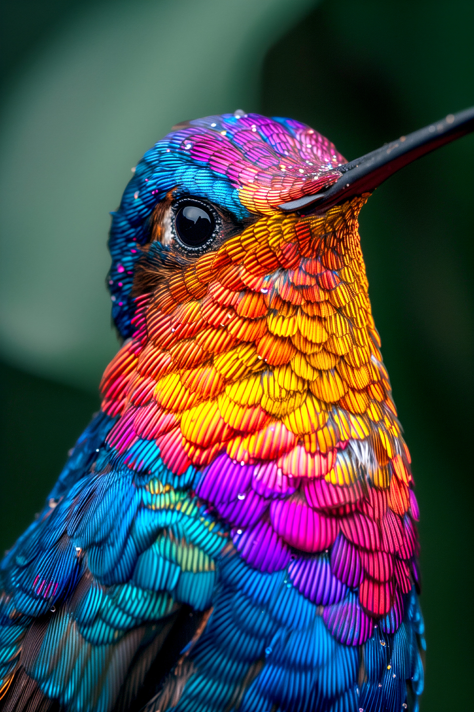
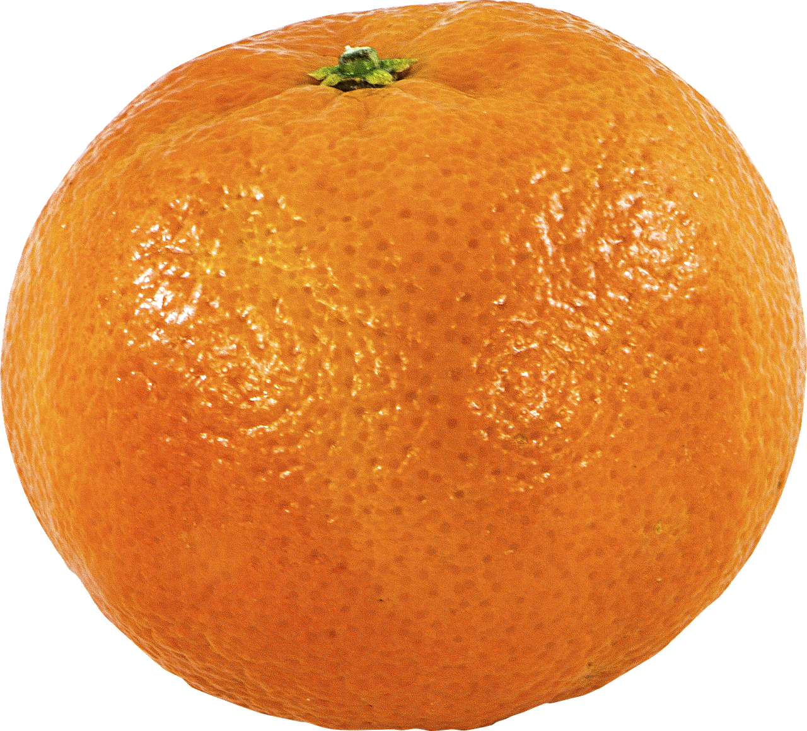

Formatos de las Imágenes
-
JPG, del inglés, Joint Photographic Experts Group, es un tipo de formato de imagen. Sirve para guardar y compartir imágenes en un formato comprimido sin una pérdida de calidad ni una pérdida de velocidad, a diferencia de las imágenes en formato crudo (del inglés, RAW). Nació en los noventas como medida para crear un formato de imagen para fotografías.
Enumerando sus características más importantes:- Elimina los píxeles innecesarios. Reduciendo así el tamaño de la imagen.
- El formato perfecto para imágenes fotográficas y fotorrealistas.
-
Lo mismo que JPG. El punto es que en los sistemas operativos con Windows, sólo se permiten las nomenclaturas con tres letras, sin embargo, su significado es el mismo. Sus características, así pues, son las mismas.
- PNG, del inglés, Portable Network Graphics, es otro tipo de formato de imagen, caracterizado principalmente por la posibilidad de tener fondos transparentes o semitransparentes. Habiendo sido publicado en 1995 por Oliver Frommme, es una evolución natural de los archivos tipo GIF, que ya llevaba ocho años publicado cuando salieron los PNG.
Enumerando sus características más importantes:- Tiene un nivel de popularidad muy alto entre las personas que se dedican al diseño web.
- Admite dieciséis millones de colores.
- Originalmente se iba a llamar "PING".
-
Webp es un nuevo formato relativamente hablando, siendo desarrollado por Google y que busca elevarse hacia ser el estándar de las páginas web. Como mayor característica, utiliza métodos de comprensión de imágenes con y sin pérdidas para reducir el tamaño de la imagen, manteniendo una buena calidad.
Enumerando otras características:- Aumenta el rendimiento del sitio web, además de optimizar los motores de búsqueda.
- Ahorra ancho de banda, a la vez que muestra imágenes de alta calidad.
- AVIF es un nuevo formato de imágenes desarrollado en 2021 incorporado en Android 12, con un nuevo intento de Google en poder reemplazar a los tan famosos archivos JPG. Del inglés, "AV1 Image File Format", tiene las siguientes características:
- Ofrece la misma calidad de imagen en un tamaño mucho más reducido (una misma imagen comprimida en AVIF ocupa un tercio que si se comprime en JPG).
- Permite almacenar en su interior tanto imágenes estáticas como animaciones.

-
 SVG, del inglés, "Scalable Vector Graphics", es un formato que, a comparación de los anteriores formatos, no está muy utilizado, pero es útil por su uso en línea, flexbilidad, capacidad de ofrecer gráficos con calidad, y sus inspiraciones en XML.
SVG, del inglés, "Scalable Vector Graphics", es un formato que, a comparación de los anteriores formatos, no está muy utilizado, pero es útil por su uso en línea, flexbilidad, capacidad de ofrecer gráficos con calidad, y sus inspiraciones en XML.
Enumerando otras características:- La posibilidad de utilizar tipografías.
- Iconos responsivos.
- Recomendado por W3C.